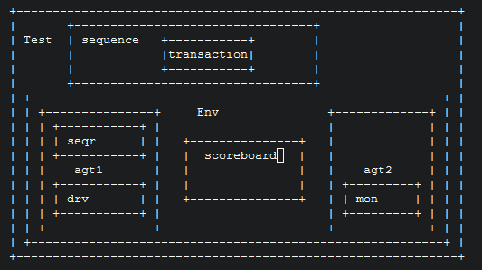
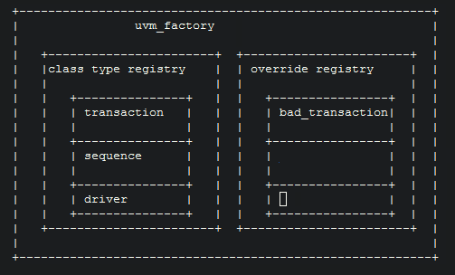

Uvm Factory Mechanism
UVM的Factory机制
验证环境要具有比较好的通用性，以及适应性。比如某一种情况下，需要我们发的transaction的某一些位域发生改变，或者dut接口上一些特定行为需要我们改变driver。UVM的factory机制为我们处理这些情况，提供了非常方便的方法。 典型的验证环境是这样的:
很可能我们想要把发的transaction变成bad_transaction，那么我们就要重写一个bad_sequence，然后再写一个bad_driver，test也要重写。下面的代码请感受一下:
class bad_transaction extends transaction;
bit bad;
function new(string name);
super.new(name);
bad = 1;
endfunction
endclass
class bad_sequence extends sequence;
bad_transaction m_bad_transaction;
function new(string name);
super.new(name);
m_bad_transaction = bad_transaction::new("m_bad_transaction");
endfunction
endclass
class bad_driver extends driver;
bad_transaction m_bad_transaction;
...
endclass
Factory机制是指，UVM从两张表里寻找用户注册的信息，然后在实例化具体的组件时做判断到底实例化哪一个class的组件，优先从override注册表里找，然后是class类型注册表。
这样，如果是irun，我们只需要在仿真时的tcl里做override，就可以最大程度的复用之前的代码。
uvm_factory -override -by_type transaction bad_transaction
当然，需要我们对我们的原始代码做小的调整。`uvm_object_utils帮助我们完成class在factory中的注册，这样在整个test中，其实例化的包是bad_transaction。
class transaction extends uvm_sequence_item;
`uvm_object_utils(transaction)
...
endclass
class bad_transaction extends transaction;
`uvm_object_utils(bad_transaction)
bit bad;
function new(string name);
super.new(name);
bad = 1;
endfunction
endclass
class sequence extends uvm_sequence;
transaction m_transaction;
function new(string name);
super.new(name);
m_transaction = transaction::type_id::create("m_transaction");
endfunction
endclass